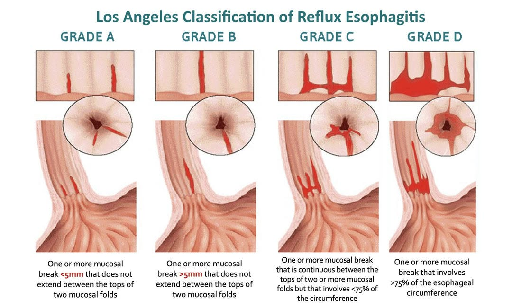
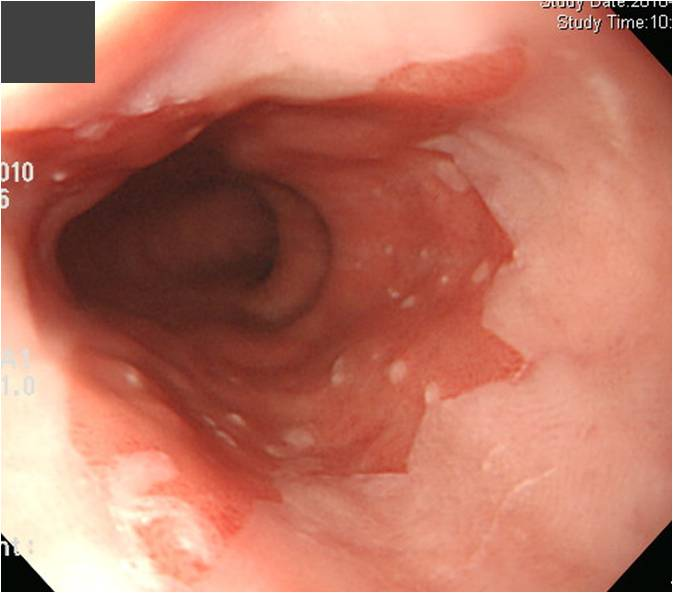

상부위장관
내시경 워크북
삽입법과 관찰, 소견 기술(DEX), 색소·확대내시경, 그리고 식도·위·십이지장의 양성/악성 질환을 장기별로 정리했다. 뼈대는 EndoTODAY(endotoday.com, 이준행) 강의·아틀라스, 살은 내가 학회에서 정리한 OneNote 노트다. 각 장에 증례 이미지·이미지–소견–치료 정리표·연습문제를 붙였다.
목차
chapters- 00총론 — 내시경 술기와 소견 기술삽입법·관찰, 해부, DEX, NBI, 조직검사, 진정, 항혈소판제, 합병증
- 01식도 양성 질환식도염 각종, GERD, Barrett, 정맥류, 게실, 이완불능증, SMT
- 02식도 악성 질환편평세포암·Barrett 선암, 조기식도암 분류, EUS, ESD·CRT
- 03위 양성 질환H. pylori, 만성위염/Kyoto, 소화성궤양·Forrest, 용종·선종, SMT
- 04위 악성 질환조기위암 육안분류, Borrmann, TNM 8판, ESD 적응·eCura, MALT
- 05십이지장 양성 질환위치기술, 궤양, 십이지장염, 이소성 점막, 게실, HSP, 선종
- 06십이지장 악성 질환선암, 유두부 병변, NET, 림프종, 전이
- 07감별 증례 100조기위암 80례 · 식도암 20례 — 사진 보고 판독, 정답·해설 포함
- 노트학회노트는 각 질환 탭 안에GERD/LA, Barrett, 궤양 vs 위암, 조기위암 ESD 적응과 추적
이 워크북을 쓰는 법
how to use처방 약어 범례
legend| 약어 | 의미 | 약어 | 의미 |
|---|---|---|---|
| qd / bid | 1일 1회 / 2회 | tid / qid | 1일 3회 / 4회 |
| qod | 격일 | hs | 취침 시 |
| prn | 필요 시 | po / IV / IM / SC | 경구 / 정맥 / 근육 / 피하 |
| ac / pc | 식전 / 식후 | 1mo / 2wk | 1개월 / 2주 |
| kcab | tegoprazan 50mg (K-CAB) | PPI | 양성자펌프억제제 |
| amox / cla | amoxicillin / clarithromycin | Hp | Helicobacter pylori |
원노트 — 위내시경 질환 Study
auto · OneNoteReference) Endotoday/TheMOST 아티클들(이준행)/Endotoday Atlas, 대한위대장내시경학회 렉처
-
GERD, NERD, Reflux Esophagitis
-
Terminology – GERD가 가장 상위 개념, 정의는 "위 내용물의 식도 역류로 증상 및 합병증이 발생"한 것. 내시경적 소견으로 정의하는 것이 아님
-
GERD 중, 내시경상 Reflux의 증거가 GE junction 및 그 상부에서 보일 때 (Mucosal break) Reflux Esophagitis로, 30~40% of GERD에서 보이며, LA classification을 한다
-
LA-A, B 가 경증, LA-C, D가 중등증~중증이며, 과거 사용되었던 Minimal Change (MCD)는 활용하지 않음.
-
Hiatal hernia는 Z-line (Squamo-Columnar epithelium 경계, B-ring)와 muscular indentation(실제로 식도와 위 사이를 구분짓는 근육으로 이루어진 ring, A-ring) 간의 간격이 2cm 이상으로 보임 (아래 그림에서 ↔로 표기).
-
LA-A는 굳이 약물치료 개시하지 않음.
-
GERD 중, 내시경적증거가 없을 땐 NERD (Non Erosive Reflux Disease) - Kcab이 NERD 보험인정받음(26-09-23 현재)

Los Angeles classification — GRADE A–D 위에서 보이는 점막 결손은 "an area of slough or erythema clearly demarcated from the adjacent normal appearing mucosa"로 정의 - Margin이 clear하게 보이며 주변 정상조직에 비해 발적으로 보임. 미란, 궤양, 발적을 모두 점막 결손이라고 함.
LA classification A – mucosal break 1개당 1개의 fold만 침범(융합하지 않음) + 5mm 이하
LA-B – mucosal break 1개당 1개의 fold만 침범 + 5mm 이상
LA-C – mucosal break가 2개 이상의 fold를 침범(융합함), 그 involve length가 전체 circum.의 75% 이하

열린 hiatus (위·식도 경계에서 ↔ 간격 확인) -
-
치료
-
LA-A, B mild GERD, NERD: PCAB(KCAB) Standard dose 4~8weeks
-
LA-C, D mod to severe GERD : PCAB(KCAB) Standard dose 8 weeks
-
환자 Mention : 위와 식도 사이를 잠궈 주는 근육이 헐거워져서 생기는 병입니다. 속쓰림, 가슴쓰림, 가슴불편감 등이 있을 수 있고 내시경소견은 정상일 수도 그렇지 않을 수도 있습니다. 근육이 일단 헐거워지면 이걸 근본적으로 고쳐 주는 치료는 어려워서, 불편하지 않게 조절하는 것이 좋습니다. 1~2개월간 약을 드셔 보시고, 불편하면 계속 드시면서 점점 약을 감량하고, 괜찮아지시면 약을 끊을 수 있습니다.
-
증상이 좋아지면 2~3일에 한번 PPI/PCAB을 먹게 step down하고, 3개월 정도 보고 그래도 괜찮으면 d/c
-
-
-
-
Barrett's Esophagus = "Intestinal Metaplasia In Esophagus"
-
발생 원인은 GERD와 같다. 그래서 Reflux esophagitis가 동반된 경우가 많다, 내시경적 소견도 비슷하다 (식도의 Squamous epithelium과 위의 Columnar epithelium의 경계가 EGJ 위로 올라와 있음). GERD는 "찢어진 것", 바렛은 상피가 위로 올라온 것
-
Tongue like projection이 있을 수 있으나, 기본적으로 위와 같은 육안소견을 보이면서 + Bx상 IM이 보여야 한다
-
미/영국에서는 연간 0.5%에서 Adenocarcinoma가 되나, 한국에서는 명확한 f/u 데이터가 없다. 우리나라에서 바렛 식도가 유의미한 식도암 전구병변이라는 증거가 명확치 않아 (Cancer risk 상승이 보이지는 않아서), short segmented Barrett's esophagus 환자(1~3cm)에게까지 Cancer 이야기를 하는 것이 바람직하지는 않은 것으로 보인다 (Expert Opinion). 단 regular f/u은 해야 함.
-
Expert Positioning : 상피경계 상승, tongue-like projection 등이 보이는 바렛식도 의심환자에게서, dysplasia나 metaplasia가 보이면 Bx를 하되, 그렇지 않을 경우 ~3cm 이하의 짧은 병변까지 Bx하고 판독지 멘션, 설명할 필요는 없다. Long segment (>3cm) 바렛의 임상적 의미도 명확치 않은데, short segment까지는...
-
-
아래 그림처럼 EG junction의 아주 위까지 상피경계가 올라와 있고, 군데군데 tongue like projection이 oral 방향으로 나 있으며, island처럼 위 쪽 상피에 몇 개의 IM의심병변이 있다.

Barrett 식도 — 상피경계 상승과 tongue-like projection -
-
기타 식도질환
-
위궤양, 미란 그리고 위암의 감별
-
위궤양 : 위산 등에 의해 점막을 넘어 submucosa 이하까지 involve된 병변 mainly d/t H.pylori, NSAID, Smoking, stress. 최근에는 Pylori 유병률은 낮으나 흡연, nsaid 사용률, 스트레스 증가로 오히려 궤양 유병률은 올라감.
-
(조기) 위암 : 환경, 식이습관, SES, H.pylori 등이 원인으로 지목되고, 우리나라에서는 H.Pylori가 가장 중요함 (국내 위암환자 대부분에서 HP 발견, 음성인 경우는 매우 드묾)
-
How to DDx?
-
증상은 Overlap되는 경우가 많으나, 위궤양은 PPI/PCAB reaction이 빠르고 잘 나타나는 경우가 흔함.
-
결국 EGD 및 Bx로 감별
-
위암이 강력하게 의심되는데도 Bx가 음성이 나오면 즉시 Bx를 재검한다.
-
애매한 경우 (위암, 위궤양 의심이 둘다 되는 경우) KCAB 등 위산억제를 1~2개월 정도 하고 EGD/Bx를 재검할 수도 (병변주변 부종 및 ulceration heal 후 Bx하여 ulcer의 영향을 없앰)
-
Borrman IV AGC(diffuse, 위벽 두꺼워지는)의 경우 육안/영상소견에 근거하여 수술하기도
원래 EGD상 GU있으면 치료 2개월 하고 f/u함 -> 위암이라면 이 때 병변이 남아 있을 것, ulcerative lesion 있으면 re-Bx
-
-
Bx site는 기본 2개, EGC의심 시 3개, AGC 의심 시 6개 이상 시행하며, "함몰부-융기부의 경계의 내측에서 정확히 Targetted Bx 시행"
-
백태를 Bx하는 것이 아니라, 올라온 부분과 파인 부분의 경계에서 시행하는 것
-
-
-
내시경소견상 괜찮은데 GU Sx 있으면 타 장기 이상소견 의심, APCT
-
-
위선종 - ESD/EMR해보면 low grade의 5~10%, high grade dysplasia의 33~50%에서 adenocarcinoma로 상향된다는 보고!
-
위암의 내시경적 치료와 f/u 방안
-
내시경 움직임의 순간 속도를 낮게 (torque를 천천히 부드럽게), 삽입시간 제외 관찰시간을 3분 이상, fluid 제거하고 찬찬히, Cardia/Fundus/LB PW/Angle/Pylorus는 의식적으로 꼭 관찰
-
조기위암 = 림프절 전이여부와 관계 없이, 암이 mucosa 또는 submucosa까지 국한된 것
-
전이와는 무관 → T stage야 T1이지만 N, M stage까지 보고 나서 최종병기 결정 (CT scan이 필요), 1~4기 모두 가능함.
-
Staging과 무관하나, 내시경시술의 indication 관련하여 중요한 개념이라 사용함.
-
-
최근 국내검진 활성화 등으로 발생률 세계 1위 → 3위. 조기진단 및 조기치료 뿐 아니라 최근 focus는 H.pylori 제균치료를 통한 Primary Prevention. Worldwide EGC/AGC 치료성적은 일본, 한국 >> others. 현재 검진 때문에 조기위암, 점막에 국한된 암이 많이 발견되고 있다.
-
조기위암의 진단?
-
뚜렷한 궤양이 동반될 경우 Submucosal tumor 가능성이 높다.
-
-
조기위암의 치료? - 기본적으로 moderate ~ well differentiated면서 2cm 이내일 때 내시경적 시술!
-
2cm 이하, well/moderately differentiated mucosal adenocarcinoma일 때 EMR/ESD를 강력하게 권고
-
궤양이 없으면서 2cm 초과하는 well/moderately differentiated adenocarcinoma, 궤양이 있고 3cm 이하인 well/moderately differentiated adenocarcinoma일 때 EMR/ESD 고려
-
Poorly differentiated adenocarcinoma일 경우 ESD 후 추가수술이 필요하다는 Pathology report 받을 확률이 유의하게 높다.
-
-
조기위암의 afterward f/u?
-
시술후 최종병리판단이 조기위암의 내시경적 치료 Indication을 만족해야 한다. 예를 들어 EMR/ESD 후 poorly differentiated라면 추가 OP가 필요하고, 크기가 2~3cm보다 크거나 en bloc이 안 되어 있을 경우나, margin positive면 역시 추가OP가 필요하다.
-
ESD/EMR 이후 6~12mo 간격의 정기적 내시경검사가 필요함.
-
ESD 이후 scar tissue가 다양한 방식으로 보일 수 있다. Polypoid, Adenomatous lesion 등으로 → Bx 반드시!
-
-
H.pylori의 Absolute elimination Tx Ix.
-
이시성 위암 (ESD 한 곳 말고 다른 곳에 숨겨져 있는 위암이 있을 가능성) 및 위외 재발이 중요한 문제임
-
결론적으로, 조기위암으로 시술받은 환자의 f/u 스케쥴은 EGD와 APCT가 있는데,
-
이시성 위암 스크리닝은 q6~12mo EGD f/u (적어도 5년 동안은 연 1~2회 EGD f/u, 5년 이후는 내시경금기가 없다면 연1회)로,
-
위외 재발 스크리닝은 최소 1년에 1회 이상의 APCT f/u!
-
그러면서 H.pylori eradication을 해야 한다(헬리코박터 제균 치료가 이시성 위암예방에 실질적인 효과가 있다)
-
-
-
-
위궤양
-
H.Pylori infection and Elimination Tx
-
(Chronic) Gastritis
LA-D – 융합된 mucosal break가 전체 circum의 75% 이상 침범
LA-B,C,D 및 histopathologically proven Barrett's esophagus는 PROVEN GERD로 즉각적인 약물치료 개시의 indication이 된다. 물론 증상이 있는 NERD도 (Proven GERD는 아니지만) 치료시작.